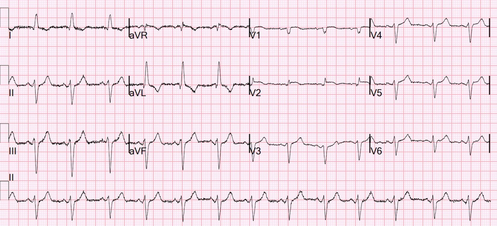
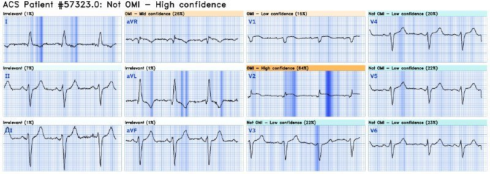
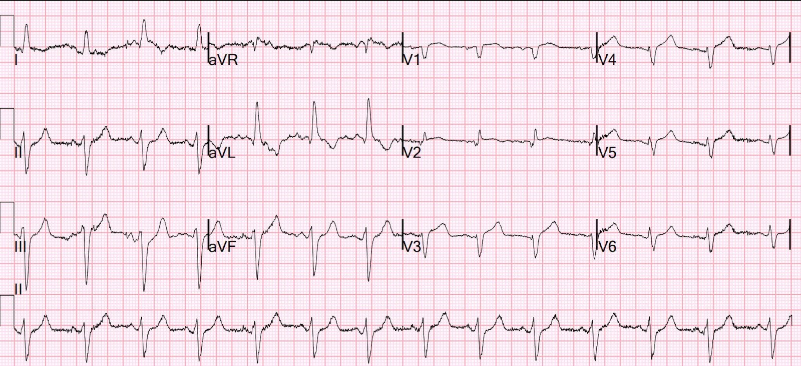
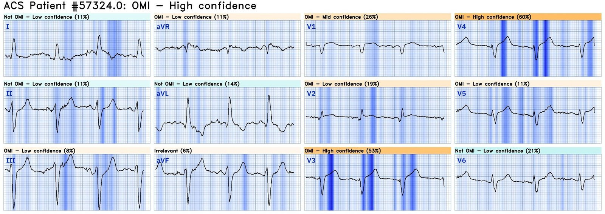
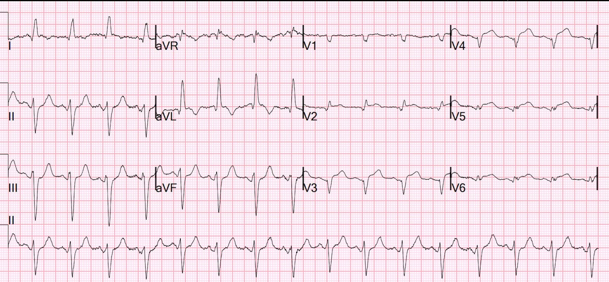
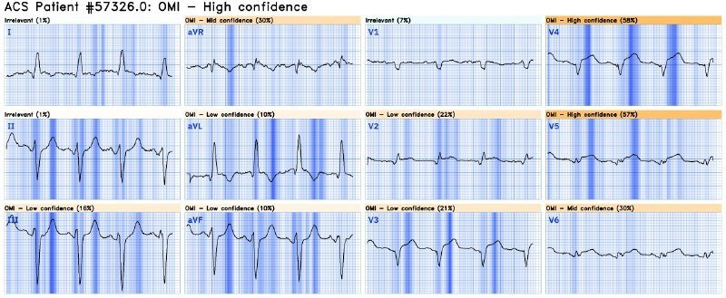
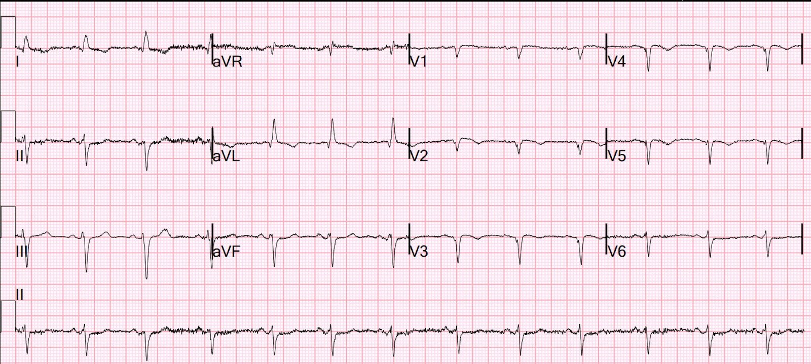
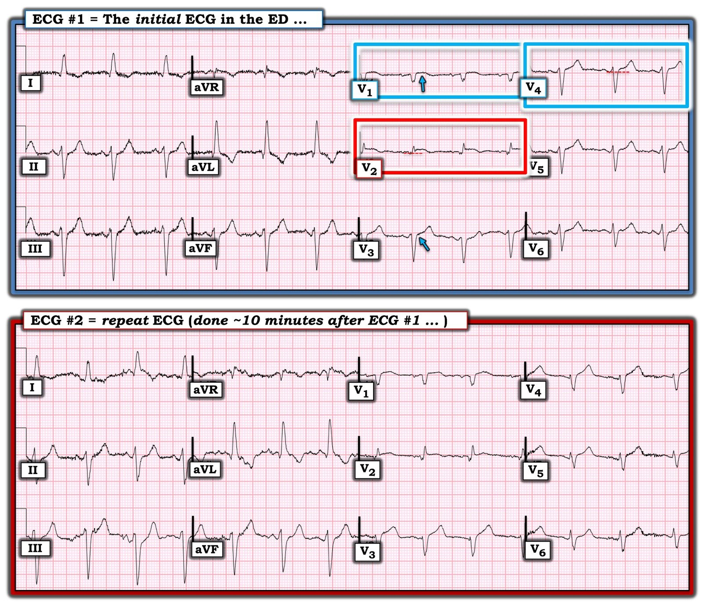

26/08/2024 — Đau thượng vị và hạ sườn phải sau khi ăn đồ cay
Bản dịch tiếng Việt của bài "Epigastric and Right Upper Quadrant pain after eating spicy food" – Dr. Smith’s ECG Blog. Giữ nguyên toàn bộ 9 hình ảnh của bản gốc.
Một phụ nữ ngoài 60 tuổi, không có tiền sử bệnh tim, đến khám vì đau thượng vị và hạ sườn phải sau khi ăn đồ cay.
Bệnh nhân được ghi điện tâm đồ lúc phân loại (triage):


Bạn nghĩ gì?
Bản ghi này được gửi cho tôi mà không kèm thông tin gì trong lúc tôi đang ở ngoài, và tôi xem nó trên điện thoại. Tôi trả lời: “Ca này khó. V2 rất đáng lo. Nhưng không có chuyển đạo nào khác đáng lo. Có lẽ tôi sẽ gọi đây là OMI. Kết cục thế nào?”
Phân tích thêm khi xem trên màn hình máy tính: Có chậm dẫn truyền trong thất với đoạn ST và sóng T ngược hướng phù hợp. Nhưng cũng có ST chênh lên (STE) đồng hướng ở V2. STE ở V1 không tương xứng với sóng S, nên V1 cũng rất đáng lo (điều mà tôi đã không thấy trên điện thoại).
Hóa ra thuật toán thông thường cũng lo ngại, và vì thế bệnh nhân được đưa vào khu hồi sức tích cực.
Đây là kết quả đọc của thuật toán máy tính thông thường:
NHỊP XOANG
CHẬM DẪN TRUYỀN TRONG THẤT [THỜI GIAN QRS 130+ ms]
PHÌ ĐẠI THẤT TRÁI VÀ THAY ĐỔI ST-T [TIÊU CHUẨN ĐIỆN THẾ KÈM BẤT THƯỜNG ST/T]
CÓ THỂ NHỒI MÁU CƠ TIM VÙNG VÁCH, CÓ LẼ MỚI XẢY RA [SÓNG Q 30 ms Ở V1/V2]
NHỒI MÁU CƠ TIM THÀNH BÊN, CÓ LẼ MỚI XẢY RA [SÓNG Q 40+ ms VÀ/HOẶC BẤT THƯỜNG ST/T Ở I/aVL/V5/V6]
***NHỒI MÁU CƠ TIM CẤP***
Sau đó, một bác sĩ tim mạch đọc lại (overread) và đã bỏ dòng ***Nhồi máu cơ tim cấp***
NHỊP XOANG. Không có điện tâm đồ trước đó.
CHẬM DẪN TRUYỀN TRONG THẤT [THỜI GIAN QRS 130+ ms]
PHÌ ĐẠI THẤT TRÁI VÀ THAY ĐỔI ST-T
TĂNG TIẾN SÓNG R BẤT THƯỜNG, NHỒI MÁU CƠ TIM TRƯỚC VÁCH (ASMI) HOẶC DO VỊ TRÍ ĐẶT ĐIỆN CỰC
Các bác sĩ đã cho điện tâm đồ chạy qua Queen of Hearts:


Nếu đây là OMI, thì Queen không nhận ra.
Nhưng Queen có gắn nhãn V2 là “OMI độ tin cậy cao” và V1 là “OMI độ tin cậy thấp”
Như những bác sĩ giỏi, họ đã ghi thêm một điện tâm đồ nữa lúc 10 phút:


Bạn nghĩ gì?
Giờ đây có sự ngắn lại của sóng S ở nhiều chuyển đạo trước tim, khiến các sóng T trở thành tối cấp! Sóng T hầu như không thay đổi, nhưng sóng S đã ngắn lại và do đó tỷ lệ T/QRS lớn hơn nhiều (cả biên độ sóng T lẫn diện tích dưới đường cong của sóng T).
Giờ đây điện tâm đồ đã có giá trị chẩn đoán OMI.
Đây là kết quả của thuật toán thông thường:
NHỊP XOANG
CHẬM DẪN TRUYỀN TRONG THẤT [THỜI GIAN QRS 130+ ms]
ĐIỆN TÂM ĐỒ BẤT THƯỜNG
Và kết quả đọc lại của khoa Tim mạch:
NHỊP XOANG
CHẬM DẪN TRUYỀN TRONG THẤT [THỜI GIAN QRS 130+ ms]
TĂNG TIẾN SÓNG R BẤT THƯỜNG, NHỒI MÁU CƠ TIM TRƯỚC VÁCH (ASMI) HOẶC DO VỊ TRÍ ĐẶT ĐIỆN CỰC
Tóm tắt so sánh: KHÔNG CÓ THAY ĐỔI ĐÁNG KỂ.
So sánh với: 18/8/2024 6:08 sáng
Lần này cả hai đều không thấy nhồi máu cơ tim cấp.
Nhưng giờ Queen of Hearts đã nhận ra:


Lưu ý rằng màu xanh dương đậm trong bản đồ giải thích này cho bạn biết Queen cũng đang nhìn thấy sóng S ngắn và sóng T tối cấp!
Bấm vào đây để đăng ký quyền truy cập Queen of Hearts
Thật không may, nhóm điều trị đã không nhận ra và họ không dùng Queen cho điện tâm đồ thứ 2. Vì vậy mãi đến phút thứ 68 họ mới ghi thêm một điện tâm đồ nữa:


Giờ thì đã rõ ràng với sóng T tối cấp tương đối rất lớn ở chuyển đạo V4
Thuật toán thông thường đã chẩn đoán được:
NHỊP XOANG
CHẬM DẪN TRUYỀN TRONG THẤT [THỜI GIAN QRS 130+ ms]
PHÌ ĐẠI THẤT TRÁI VÀ THAY ĐỔI ST-T [TIÊU CHUẨN ĐIỆN THẾ KÈM BẤT THƯỜNG ST/T]
NHỒI MÁU CƠ TIM TRƯỚC BÊN, CÓ LẼ MỚI XẢY RA [SÓNG Q 40+ ms Ở I/aVL/V3-V6]
***NHỒI MÁU CƠ TIM CẤP***
Còn kết quả đọc lại của khoa Tim mạch thấy được sự tiến triển nhưng chưa bị thuyết phục:
NHỊP XOANG
CHẬM DẪN TRUYỀN TRONG THẤT [THỜI GIAN QRS 130+ ms]
PHÌ ĐẠI THẤT TRÁI VÀ THAY ĐỔI ST-T [TIÊU CHUẨN ĐIỆN THẾ KÈM BẤT THƯỜNG ST/T]
THAY ĐỔI ST VÙNG TRƯỚC VÀ BÊN
TĂNG TIẾN SÓNG R BẤT THƯỜNG, NHỒI MÁU CƠ TIM TRƯỚC VÁCH (ASMI) HOẶC DO VỊ TRÍ ĐẶT ĐIỆN CỰC.
Tóm tắt so sánh: THAY ĐỔI ST VÙNG TRƯỚC BÊN HIỆN RÕ HƠN, THAY ĐỔI PHỤ THUỘC TẦN SỐ HAY DO THIẾU MÁU CỤC BỘ
Đây là chẩn đoán của Queen:


Phòng thông tim (cath lab) đã được kích hoạt:
(Các) tổn thương thủ phạm: hẹp 99% có huyết khối ở LAD đoạn giữa với dòng chảy TIMI II
Đáng tiếc là troponin đỉnh không được đo. Vì vậy chúng ta không biết rõ kích thước ổ nhồi máu cuối cùng lớn đến mức nào.
Siêu âm tim:
Kích thước thất trái bình thường, chức năng tâm thu thất trái giảm nhẹ đến trung bình; LVEF ước tính là 44 %.
Có vô động vùng vách đoạn xa, thành trước, mỏm và thành dưới đoạn xa, phù hợp với thiếu máu cục bộ hoặc nhồi máu vùng chi phối của LAD.
Ổ nhồi máu lớn đến mức nào?
Không thể từ đây mà kết luận rằng ổ nhồi máu RẤT lớn, mặc dù có lẽ nó đã rất lớn vì thời gian đến khi can thiệp kéo dài. Vùng bị tổn thương quả thực lớn, nhưng liệu toàn bộ vùng đó đã nhồi máu không hồi phục hay chưa thì cần MRI hoặc siêu âm tim theo dõi sau 6 tuần (“giai đoạn hồi phục”) để xem bao nhiêu cơ tim hồi phục (tức chỉ bị “choáng”, không bị nhồi máu)
Điện tâm đồ sau PCI:


Có mất lực khử cực phía trước (sóng Q) mà trước đó không có. Có lẽ là nhồi máu đáng kể.
Những điểm cần học:
Các điện tâm đồ liên tiếp là cực kỳ quan trọng.
Hãy áp dụng Queen of Hearts cho tất cả các điện tâm đồ liên tiếp.
Đôi khi, thuật toán thông thường sẽ thắng Queen
Kết quả đọc lại của khoa Tim mạch không nhạy đối với OMI.

===================================
BÌNH LUẬN CỦA TÔI, bởi KEN GRAUER, MD (26/8/2024):
===================================
Tôi xem điện tâm đồ #1 khi chỉ biết rằng: “một phụ nữ ngoài 60 tuổi, không có tiền sử bệnh tim, đến khám vì đau hạ sườn phải (RUQ) sau khi ăn đồ cay.”
- Mặc dù bệnh sử rõ ràng là đau bụng gợi ý viêm túi mật — điện tâm đồ vẫn được làm một cách đúng đắn. Đây là lời nhắc quan trọng về nhiều cách biểu hiện ngoài đau ngực của hội chứng vành cấp (Xem Talakic và cs. — Cardiovasc Med, 2023 và Tsipouras — Austral Fam Phys 37(8), 2008, cùng nhiều nguồn khác).
Tôi đã đánh dấu các chuyển đạo MẤU CHỐT trong điện tâm đồ ban đầu đã lập tức thu hút sự chú ý của tôi:
- Như Dr. Smith đã nói — không đời nào phức bộ QRST ở chuyển đạo V2 có thể bình thường (trong hình chữ nhật ĐỎ ở Hình 1). Có ST dạng vòm (coving) bất thường — và — xét đến biên độ QRS ở chuyển đạo này nhỏ như thế nào, thì đây là ST chênh lên rõ rệt.
- Ở chuyển đạo V2 cũng có sóng Q khởi đầu phân mảnh và giãn rộng rõ rệt.
- Cuối cùng — có một sóng R “mồ côi” (tức là sóng R cao chiếm ưu thế) ở chuyển đạo V2 — khác hẳn với tất cả các chuyển đạo ngực còn lại (Xem bên dưới).
Có chuyển đạo bất thường nào khác trong điện tâm đồ #1 không?
Tầm quan trọng của việc nhận ra rằng chuyển đạo V2 trong điện tâm đồ #1 không đời nào có thể “bình thường” — là điều đó buộc ta phải soi xét kỹ hơn 11 chuyển đạo còn lại.
- Các chuyển đạo chi trong điện tâm đồ #1 cho thấy nhịp xoang với QRS giãn rộng và trục lệch trái rõ rệt — LAD (Left Axis Deviation). Mặc dù trục mặt phẳng trán -60 độ đủ âm để phù hợp với LAHB (Left Anterior HemiBlock, blốc phân nhánh trái trước) — với LAHB “thuần túy”, các sóng r khởi đầu ở chuyển đạo dưới thường không rộng như thấy ở đây — vì vậy “chậm dẫn truyền không đặc hiệu” kèm trục lệch trái rõ rệt có lẽ là cách mô tả các dấu hiệu tốt hơn. Dù vậy — các dấu hiệu ST-T ở chuyển đạo chi không có giá trị chẩn đoán! Cả LVH (có thể có ở đây) lẫn LAHB đều có thể đi kèm ST-T chênh xuống như thấy ở đây tại chuyển đạo I và aVL.
- NHƯNG — Các chuyển đạo ngực khác trong điện tâm đồ #1 không bình thường — đặc biệt là các chuyển đạo lân cận với chuyển đạo V2. Như Dr. Smith đã nói — mức ST chênh lên tương đối ở chuyển đạo V1 không tương xứng với độ sâu rất nhỏ của sóng S ở chuyển đạo này (mũi tên XANH ở chuyển đạo V1).
- Như chúng tôi vẫn thường nhấn mạnh — bình thường thường sẽ có ST chênh lên nhẹ, dốc lên thoai thoải ở chuyển đạo V3 — nhưng ở đây không thấy điểm J chênh lên ở chuyển đạo này (mũi tên XANH ở V3). Lý do tôi thấy dấu hiệu tinh tế này ở chuyển đạo V3 quan trọng — là lượng ST chênh lên “dư thêm” tinh tế nhưng có thật hiện diện ở chuyển đạo V4, khiến các dấu hiệu ở 4 chuyển đạo ngực đầu tiên trở nên đáng lo ngại. Bình thường tôi không chờ đợi ST chênh lên nhiều như vậy ở chuyển đạo V4 khi chuyển đạo V3 hoàn toàn không có chút ST chênh lên nào.
- Tóm lại: Từ đánh giá ban đầu về điện tâm đồ #1, tôi không chắc chắn về việc có OMI cấp. Dù vậy — tôi thấy các dấu hiệu ở chuyển đạo ngực V1 đến V4 đủ đáng ngờ để vui mừng vì một điện tâm đồ ghi lại đã được thực hiện trong vòng 10 phút tiếp theo!
Có thể học được gì từ điện tâm đồ ghi lại?
Có 2 điều quan trọng cần học từ điện tâm đồ ghi lại:
- #1 — Không còn nghi ngờ gì về OMI LAD cấp! Ca hôm nay là thêm một ví dụ cho thấy các thay đổi điện tâm đồ có tính quyết định có thể tiến triển nhanh đến mức nào — với chỉ dẫn cho chúng ta là hãy có ngưỡng thấp để ghi lại điện tâm đồ trong vòng 10–20 phút tiếp theo khi lo ngại về một điện tâm đồ ban đầu chưa đủ để chẩn đoán. Hãy tiếp tục ghi các điện tâm đồ liên tiếp cho đến khi có kế hoạch xử trí dứt khoát (đôi khi nghĩa là cho đến khi bạn thuyết phục được bác sĩ can thiệp trực đưa bệnh nhân vào phòng thông tim!).
- #2 — Cách TỐT NHẤT để giỏi phát hiện các dấu hiệu cấp tính sớm của OMI — là thường quy QUAY LẠI bản ghi ban đầu sau khi thay đổi ST-T đã tiến triển. Làm như vậy ở Hình 1 giúp nhận ra những bất thường tinh tế mà tôi đã đánh dấu ở trên tại chuyển đạo V1, V3 và V4 đã tiến triển thành các dấu hiệu chẩn đoán rõ ràng như thế nào.
================================
Sóng R cao “mồ côi” ở chuyển đạo V2?
Đặt sai vị trí điện cực chuyển đạo ngực là chuyện thường gặp trong thực hành chung (Rehman và Rehman — Cureus 12(7):e9040, 2020). Do những vấn đề về vị trí đặt liên quan đến mô vú — việc đặt điện cực chuyển đạo ngực tối ưu đặc biệt khó khăn ở phụ nữ — dẫn đến những biến thiên không nhất quán và quá thường xuyên phụ thuộc vào kỹ thuật viên (Kligfield và cs. — AHA/ACC/HRS Scientific Statement, 2007).
- Dù có khả năng vị trí đặt điện cực của chuyển đạo V2 trong ca hôm nay là đúng — nhưng vì chuyển đạo bất thường nổi bật nhất trên điện tâm đồ ban đầu của ca hôm nay là chuyển đạo V2 (là chuyển đạo ngực duy nhất có sóng R chiếm ưu thế) — việc bảo đảm đặt điện cực chính xác có vẻ là thiết yếu để chẩn đoán chính xác. Thực hành TỐT NHẤT khi nghi ngờ có thể đặt sai vị trí điện cực của một chuyển đạo then chốt trong đánh giá của bạn — là kiểm tra lại vị trí điện cực, và lập tức ghi lại điện tâm đồ.
ĐIỂM THEN CHỐT (PEARL): Dấu hiệu điện tâm đồ đơn độc là một sóng R cao bất ngờ ở chuyển đạo V2 như thấy trong ca hôm nay — có thể không phải lúc nào cũng do đặt sai vị trí điện cực. Chugh và cs. báo cáo về hiện tượng điện tâm đồ hiếm gặp này như một biểu hiện có thể có của tắc động mạch vành cấp (Cureus 9(4):e1200, 2017).
- Cơ chế được đề xuất cho dấu hiệu sóng R cao đơn độc ở chuyển đạo V2 trên bệnh nhân đau ngực cấp là phức tạp và chưa được làm sáng tỏ hoàn toàn. Người ta cho rằng nó là kết quả của sự khử cực bất thường ở vùng thiếu máu cục bộ cấp, dẫn đến phân tán thời gian tái cực — sao cho các lực dương không bị đối kháng hướng về vùng thiếu máu cục bộ cấp tạo ra sóng R cao đơn độc ở chuyển đạo V2 (tức là sự phân tán tái cực trong thiếu máu cục bộ cấp có thể làm mất thoáng qua sóng S — do đó để lại một sóng R không bị đối kháng).
- Trong ca nghiên cứu của Chugh và cs. — sóng R cao ở V2 là thoáng qua, biến mất sau khi thiếu máu cục bộ cấp được kiểm soát. Trong ca hôm nay — sóng R cao ở V2 đã biến mất sau PCI thành công.
- Lưu ý của tác giả: Tôi đã từng thấy dấu hiệu điện tâm đồ này trước đây — nhưng trước đây chưa nhận ra rằng thay vì do đặt sai vị trí điện cực, đây có thể là dấu hiệu của OMI cấp. Từ nay tôi sẽ “để mắt” tìm thêm các ví dụ, rồi đối chiếu với diễn biến lâm sàng để xem dấu hiệu này có báo trước tắc LAD cấp hay không.

